THE INSTRUMENTS YOU NEED FOR SCALING
We scale teeth with special instruments called scalers. There are many different kinds of scalers for different teeth, to make scaling easier. It can be a problem to know which ones to buy.
Scalers are expensive instruments. For that reason, it is better to order only a few instruments that you can use to clean most teeth.
You need only 2 double-ended scalers, or 4 single-ended scalers.
For instance:
1. One with two pointed tips—to remove tartar from the part of the tooth near the gum.
Its proper name is lvory C -1 scaler.
2. Another with two blunt, rounded ends—to remove tartar from the part of the tooth under the gum.
Its proper name is
G-11 and 12 curette.
The ends of the scaler are the important parts. One end is bent to the left and the other end is bent to the right, so you can reach more easily around all sides of the tooth.
The blade at each end of the scaler is sharp. You must keep the blade sharp.
A sharp blade can break more of the tartar away than a blunt blade.
You also need these:
Sharpening stone
Mirror
Probe
Tweezers
(Arkansas stone)
(explorer)
(cotton pliers)
NOTE: When you order an instrument, use both its common and proper name. Then you have a better chance of receiving the instrument you want. You can also make some of your own instruments. See pages
208-210.
Keep everything in a Scaling Kit.
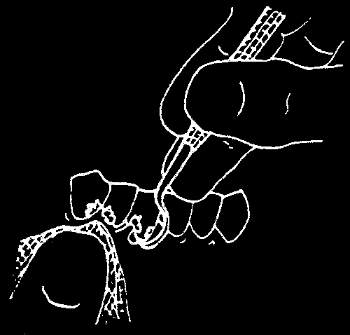
HOW TO SCALE TEETH
Tartar starts to form inside the gum pocket. There it builds up, because the gums protect it. So you often must feel rather than see the tartar when you scale a tooth.
You must remove all of the tartar so the gums can heal. New tartar grows faster when there is old tartar Ieft behind for it to build upon.
Lay out what you need ahead of time:
your instruments: scalers, mirror, probe, tweezers sharpening stone cotton gauze
Your light must be good enough to see the tooth and gums around it clearly.
Scaling teeth requires time and practice. Make yourself and the person comfortable. You can sit next to a special chair that lets the person lean back
(see page 75).
The steps in scaling teeth are these (pages 135–139):
1. Explain to the person what you are going to do.
2. Feel under the gum for rough spots (tartar).
3. Place the scaler under the tartar.
4. Pull the scaler against the side of the tooth.
5. Check to be sure the tooth is smooth.
6. Explain what you have done and what the person should now do.
1. Explain what you are going to do. Tell the person what to expect.
There will be some bleeding and possibly some pain. However, you can stop and rest, or inject local anesthetic, if it is painful. remember: first wash your hands and your instruments! (See pages 86–89.)
2. Feel under the gum for tartar. Tartar feels like a rough spot on the root of the tooth. Since tartar can form anywhere inside the gum pocket, feel for it on all sides of the tooth.
You can check for tartar two ways:
a. Use your probe. Slide the point up and down along the root surface under the gum. Feel for places that are rough.
Teeth without tartar are smooth.
b. Use cotton gauze. Twist a corner and press it between the teeth. The gauze lowers the gum and soaks up the spit.
You can then see more tartar.
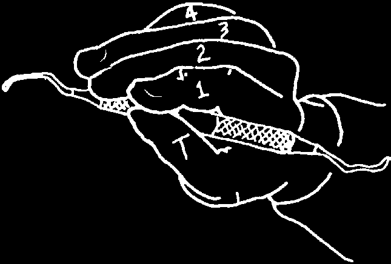


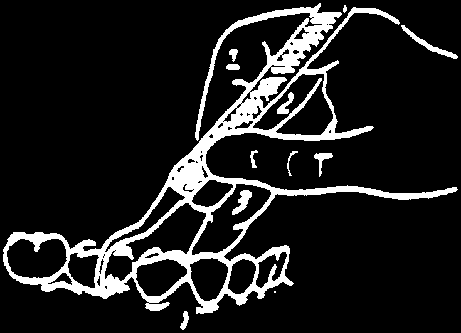

3. Place the scaler under the tartar. You must learn two important things:
how to hold the scaler and how to slide the scaler into the gum pocket.
Hold the scaler almost as you would hold a pen. You can then pull it against the tartar with both power and control.
Control is very important. The ends of the scalers are sharp. If you are not careful, the blades can cut the gums.
Be gentle and do not hurry. Always hold the tip of the scaler on the tooth to avoid poking the gums.
Rest your 3rd finger against a tooth. This will steady your hand and let you slide the sharp scaler under the gum with care.
FOR AN UPPER TOOTH
FOR A LOWER TOOTH


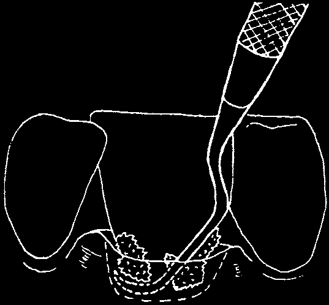
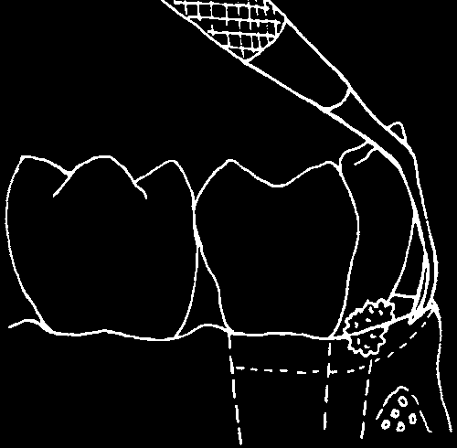
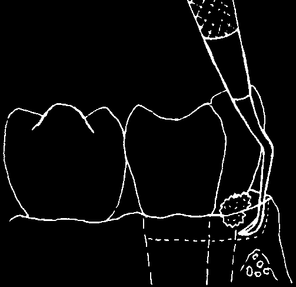
The edge of the gum, near the tooth, folds under to form a pocket. This gum pocket goes completely around each tooth. The gum pocket can be shallow or deep. A deep pocket means there has been an infection for a while.
Tartar starts forming deep inside the gum pocket. If
TARTAR
you remove tartar that you can see above the gum,
GUM POCKET
it is helpful, but not good enough. You must remove
ROOT FIBERS
the rest of the tartar, or the infection will continue. If
BONE
part of the tartar stays on
ROOT
the tooth, the infection will continue.
First, use the
Then, go back with your pointed-tip scaler rounded-tip scaler and to remove the tartar scrape away the that you can see.
remaining tartar.
Be careful when you place the rounded end of the scaler inside the gum pocket.
a) Put the sharp face of the blade b) You can feel the edge as it goes over against the tooth. Slide it along the the rough tartar. Stop when you feel tooth down into the gum pocket.
the bottom of the gum pocket.
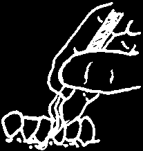

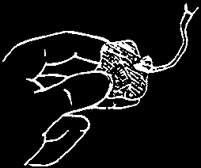

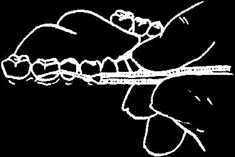
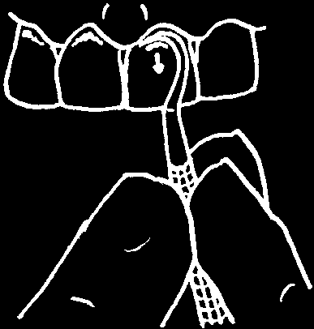
4. Hold the end tight against the side of the tooth and pull the scaler.
Try to break free as much tartar as possible at once. It is a bad idea to remove the tartar a bit at a time, because the remaining tartar becomes smooth and harder to scrape away.
1. Tighten your fingers
2. Pull the scaler with a on the scaler.
firm short stroke.
ALWAYS KEEP THE TIP OF
THE SCALER ON THE TOOTH—
NOT POKING THE GUM.
3. Wipe the end of the
4. Press against the gums scaler with cotton gauze.
to stop the bleeding.
5. Check to be sure the tooth is smooth.
With your probe, feel under the gum for any place that is still rough.
When all the sides of the tooth feel smooth, move to the next tooth.
Do not hurry. It is more important to take your time and carefully remove all the tartar. If the person has a lot of tartar, scale only half the mouth now. Do the other half on another day, as soon as the person can return.
Finally, make the tooth look clean. Use the sharp edge of either scaler.
Scrape away the dark material on the front and back sides of the tooth.
The tooth itself has not turned dark. It is just a stain. People most often get these stains when they eat meat, drink tea or smoke tobacco.
You can scrape away this old food and uncover the white tooth. But remember: the teeth will turn dark again if not cleaned carefully every day.
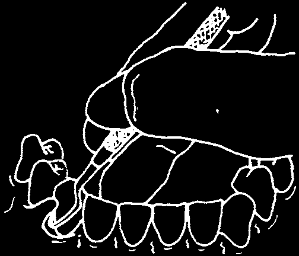

6. Talk to the person about what you have done and what to expect. The gums will be sore for the next few days. That is normal.
Then explain to the person what to do to make the gums strong and tough again.
• Clean your teeth better with a soft brush. Reach with the brush into the gum pocket, and behind your front teeth. That is where tartar collects most often (page 69).
• Clean between your teeth. Use your brush, the stem from a palm leaf, or a piece of strong, thin thread (page 71).
• Rinse your mouth with warm salt water. Start with 4 cups a day, to make the gums strong. Then use 1 cup a day to keep them strong (page 7).
• Eat local foods that give strength to gums. Fresh fruits like guava and oranges, and fresh vegetables with dark green leaves are good for the gums.
REMOVING SOMETHING FROM UNDER THE GUM
If the gum between two teeth is red and swollen, something may be caught inside the gum pocket. Ask what the person has been eating. The object may be a fish bone, mango string, or a sharp piece of tartar.
First try to feel the object with your probe. Then remove it using a scaler or a piece of strong thread.
Use the rounded-tip scaler in the same way as you would to remove tartar.
Feel the object, go under it gently, and then lift it out.
OR
Tie a knot in a piece of thread. Then slide the thread between 2 teeth (page 71).
However, do not move the thread up and down. Instead, pull it and the knot out the side. The knot can pull the object out with it.*
* If the gum has grown into a kind of tumor (epulis), an experienced dental worker should cut it away.

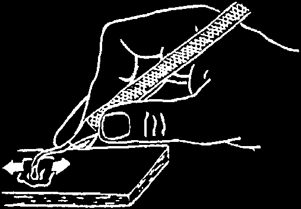

KEEP YOUR SCALING INSTRUMENTS
SHARP AND CLEAN
A sharp scaler bites into tartar better than a blunt one. Sharpen the edge whenever you feel it sliding over the tartar.
From time to time, feel the cutting edge to be sure it is sharp.
Scrape it against your fingernail. If the cutting edge is not able to cut your nail, it will not be sharp enough to break the tartar free.
Sharpen the cutting edge of the scaler on a fine-grain stone (Arkansas stone). Put a few drops of oil or water on the stone first, so the scaler can slide against it more easily.
Rest your 2nd or 3rd finger against the side of the stone. This is for control.
Rub the cutting edge against the stone.
Move it back and forth.
Turn the round scaler as you sharpen it.
This helps to keep the scaler’s round shape.
Scalers must be more than clean—they must be sterile. This is because there may be spots of blood on them. Hepatitis (Where There Is No Doctor, page 172) and other diseases can pass from the blood of one person to the blood of another person. To learn how to sterilize, see pages 87 and 88.
Your mirror, probe, and canon tweezers do not need sterilization. A disinfectant (see page 89) will clean them. Dry all the instruments with a towel. Then wrap them inside a clean cloth and put them in your scaling kit.
They are now ready for use whenever you need them again.
Remind each person: scaling is not a cure. Rather it is a way of giving her a new start. Only she can give herself the care she needs to keep her gums healthy. You have removed the hard material from her teeth, and if she brushes carefully, the tartar will not return!
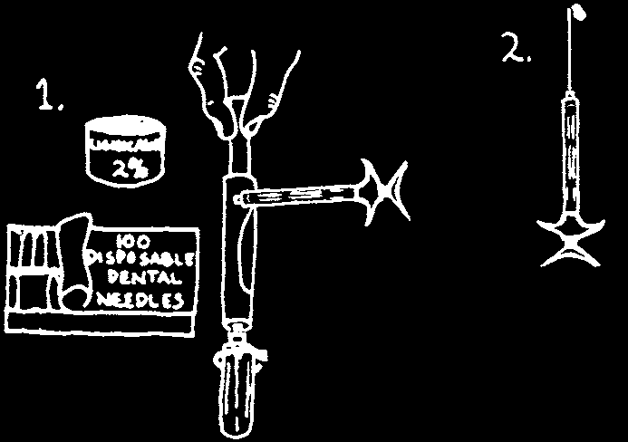
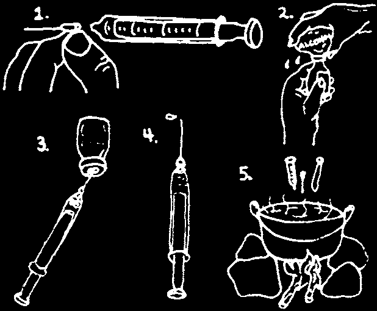
Injecting Inside
CHAPTER 9
the Mouth
It is possible to treat a tooth without pain. You do this with an injection of local anesthetic. You must inject near the nerve, so to give good injections, you must know where the nerves are.
Injecting is a skill that develops with experience. The best way to learn is not from a book, but from a person who has experience giving injections.
Watch an experienced dental worker give injections. That person can then watch you and show you how to inject carefully and safely.
Local anesthetic is an injectable medicine. When it touches a nerve, the tooth joined to that nerve feels numb or dead for about an hour. This usually gives you enough time to take out a strong tooth or to put a cement filling into a deep cavity.
WHAT YOU NEED TO INJECT
There are two kinds of syringes for injecting local anesthetic inside the mouth. One is made of metal and the other is made of glass. The metal syringe uses local anesthetic in a cartridge. The glass syringe uses local anesthetic from a bottle.
DENTAL (METAL) SYRINGE
GLASS SYRINGE
This is a dental syringe. It uses special
This kind of syringe is for injections of needles, and the local anesthetic is sealed medicine like penicillin, but you can use inside a glass cartridge. After injecting, it in the mouth. Sterilize the syringe and safely dispose of the needle and the needles (pages 88 and 138) before and cartridge. See pages 199 to 200.
after each use. When sterile, the needles are ready for another person.
Before you inject, be sure the local anesthetic is able to come out of the needle.
Use a new needle and a new cartridge of local anesthetic for each person.
Be careful! Do not touch the needle.

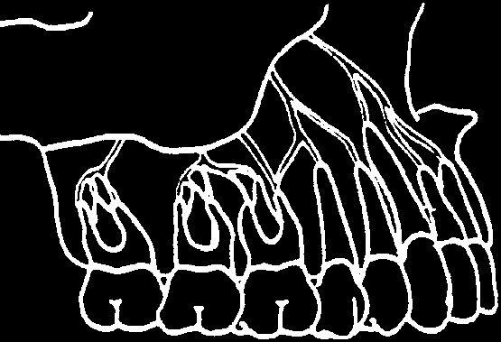
It is safer to use the metal dental syringe but it depends on the local anesthetic you can get. Order needles to fit your particular kind of syringe.
METAL SYRINGE
PLASTIC OR GLASS SYRINGE
Order:
Order:
1. syringe: aspirating dental cartridge
1. syringe: standard syringe that syringe, 1.8 ml (1ml=1cc)
holds around 3 ml (1ml=1 cc)
2. needles: disposable needles for dental
2. needles: 24 gauge, long (40 mm cartridge syringe (27 gauge, long)
x.56 mm or similar)
one box contains 100 needles, each
3. local anesthetic: 20 ml bottle of one inside a plastic cover.
lidocaine (lignocaine) 2%
3. local anesthetic: local anesthetic or, if not available: order cartridges for a dental syringe
2 ml ampules of procaine one sealed tin contains 50 cartridges hydrochloride 1%.
of lidocaine (lignocaine) 2%.
NOTE: Lidocaine will keep the teeth numb longer if there is epinephrine in it. But this is more expensive, and you should not use it on persons with heart problems (see the bottom of the next page).
WHERE TO INJECT
You can deaden a nerve with an injection of local anesthetic:
1. near the small nerve branch going inside the root of a tooth.
2. near the main nerve trunk before it divides into small branches.
Smaller nerves 'branch’ off from the main nerve—much like branches of a tree leave its main trunk.
One small nerve then goes to each root of every tooth.
Inject an upper tooth near its roots.
Bone in the upper jaw is soft and spongy.
Local anesthetic placed near the root of an upper tooth can go inside the bone and reach its nerve easily.
The same injection also makes the gums around that side of the tooth numb.
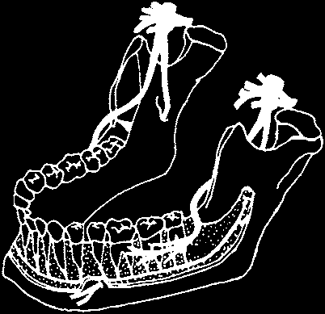
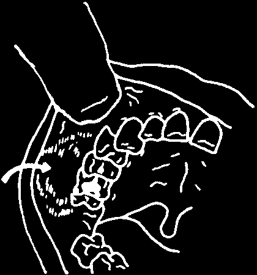
It is more difficult to inject the lower teeth.
The lower jaw bone is thicker. When you inject near the roots of a lower tooth, the anesthetic is not able to reach its nerve as easily.
Note: You can inject lower front teeth in young children, or very loose lower nerve (a)
front teeth in adults, near their roots.
enters jawbone here
To make a lower tooth completely numb, you must nerve (a)
block the main nerve (a) before it goes inside the jaw bone.
nerve (b)
goes to 3
If you are treating a back back teeth tooth, you must give a second injection for nerve (b).
These 2 injections also make the
See page 140.
gums around the teeth numb.
WHEN TO INJECT
Inject local anesthetic whenever the treatment you give may hurt the person. If, after you inject, the person says the tooth still hurts, be kind. Stop and inject again.
Inject local anesthetic slowly and carefully.
You can then treat a bad tooth and not hurt the person.
HOW TO INJECT*
For a good, safe injection, remember these 5 things!
1. Do not inject local anesthetic into an area that is swollen.
This can spread the infection.
swelling
Also, pus inside the swelling stops the local anesthetic from working properly.
Instead, treat the swelling first (page 94) and take out the tooth later.
2. If the person has a heart problem, do not inject more than
2 times in one visit. Also, it is best not to use an anesthetic with epinephrine on persons with heart problems. Use lidocaine only, or mepivacaine 3% only.
* Local anesthetics are the only injections given in the mouth. To learn about injecting antibiotics, see page 204.
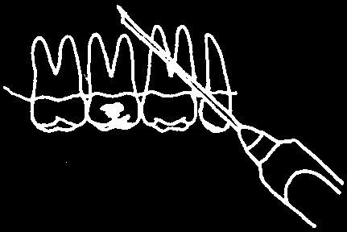


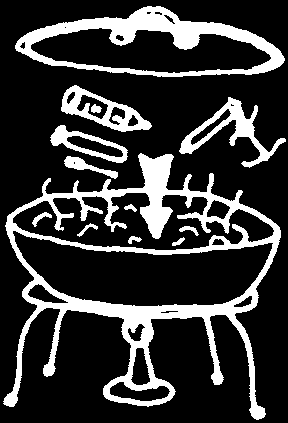
3. Before you push the needle under the skin, be sure its pointed end is facing in the correct direction.
The local anesthetic must come out against the bone, where
YES the nerve is.
NO
4. Before you inject the local anesthetic, wait a moment to see if any blood enters the syringe. (Note: only an aspirating syringe will do this.)
blood
Pull back on the plunger. If blood comes inside, it means you have poked a blood vessel.
Pull the needle part way out and gently move it over to a different place.
If you inject local anesthetic into the blood vessel, there will be more swelling afterward, and the person may faint. If the person faints:
• Lie him on his back.
• Loosen his shirt collar.
• Lift his legs so they are higher than his head.
5. Be sure your syringe and needles are clean and sterile (see pages 86 to 89). Do not pass an infection from one person to another by using dirty needles.
fOR GLASS SYRINGES:
Boil the syringe and needle in water (page 88)
for at least 30 minutes in a covered pot. It is also a good practice to boil your metal syringe.
fOR METAL SYRINGES:
• Use a new cartridge for each person who needs an injection. Do not use local anesthetic from a cartridge that you have used on another person.
• Use each disposable needle only 1 time and then throw it away in a box like the one on pages 199 to 200. If you must reuse a needle, replace the cap very carefully and put the needle in a safe place (such as a pan of bleach solution) until you are ready to clean and sterilize it
(see pages 87–88).

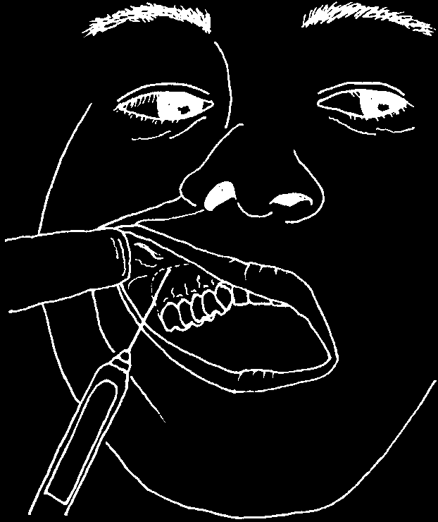
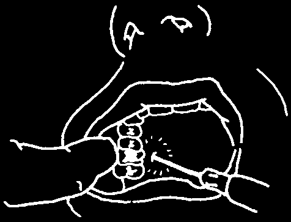

Injecting the Upper Teeth
Inject local anesthetic near the root of the tooth you want to treat.
Front teeth have one root. Back teeth have more than one.
For a tooth to become completely numb, the local anesthetic must touch the small nerve going to each one of its roots.
1. First decide where to inject.
Lift the lip or cheek. See the line that forms when it joins the gum.
The needle enters at the line where the lip or cheek meets the gum.
2. Push the needle in, aiming at the root of the tooth. Stop when the needle hits bone.
Inject about 1 ml of local anesthetic (½ of a cartridge).
Pull the needle part way out and move it over to the next root. Inject again.
If the tooth is to be taken out, leave.25 ml for the next step.
3. If you are taking out a tooth, also inject the gums on the inside.
Ask the person to open wide. Inject the remaining anesthetic (.25 ml) directly behind the back tooth that must come out.
One injection can numb the gum behind the
6 front teeth. Inject into the lump of gum behind the middle front teeth.
(Note: This injection hurts! It may help to use
'pressure anesthesia.’ See page 141.)
4. Wait 5 minutes for the tooth to become numb.
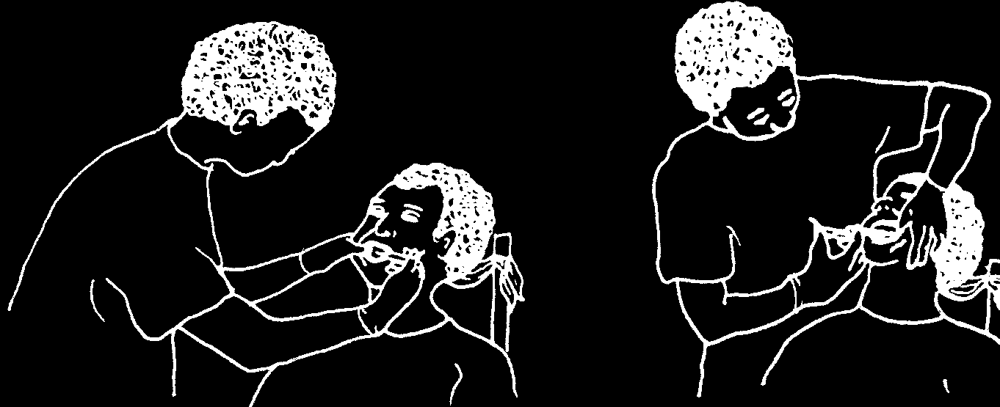
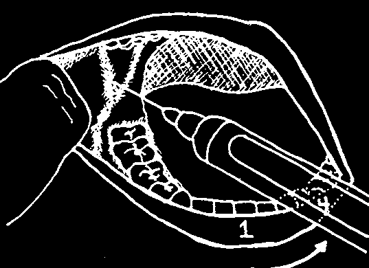